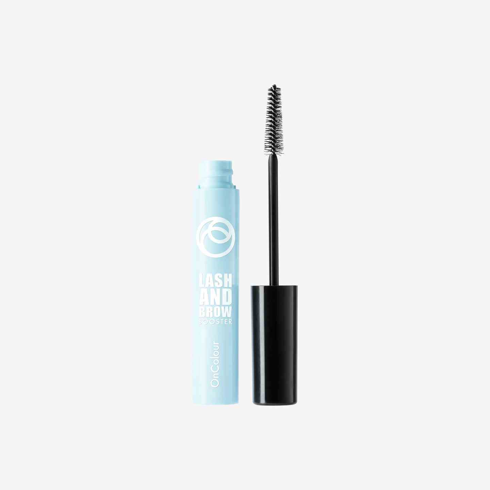

4 productos básicos de maquillaje para utilizar a diario
Base iluminadora y perfeccionadora para el rostro
Se trata de un producto para aplicar antes del maquillaje que revitaliza la tez y ayuda a minimizar las posibles imperfecciones. Es apto para todo tipo de pieles y tiene una fórmula que se absorbe rápido. Con un resultado luminoso y de larga duración, garantiza también una cobertura invisible. Se comercializa en un tubo de 30 mililitros
Base de sombra de ojos
Si lo que queremos es un producto específico para fijar e intensificar el maquillaje de los ojos, lo ideal es utilizar una base como esta que asegura una fijación de larga duración y que es resistente al agua. Se trata de una base ultra ligera que permite aplicarla con facilidad en los párpados y deja la zona lisa y uniforme antes de aplicar las sombras de ojos.
Base para pestañas y cejas
Otra zona del rostro que no debemos descuidar es la de las cejas y pestañas. Una buena solución es aplicar esta máscara, en gel transparente, que permite lograr una fijación suave del producto sin que el acabado sea pegajoso. Incluye un aplicador especial con cerdas de distintas longitudes para peinar, fijar o definir las cejas según las necesidades de cada momento.

Fijador del maquillaje
Una vez que hemos aplicado todos los elementos de maquillaje que deseemos, es posible aportar un toque extra y evitar que se vaya desvaneciendo a lo largo del día. Para ello, este espray fijador con una duración de 16 horas que deja en el rostro una sensación agradable sin acartonamiento. Para obtener un mejor resultado recomiendan agitar bien el frasco antes de aplicarlo y vaporizar entre dos y cuatro veces a un distancia de entre 20 y 25 centímetros.